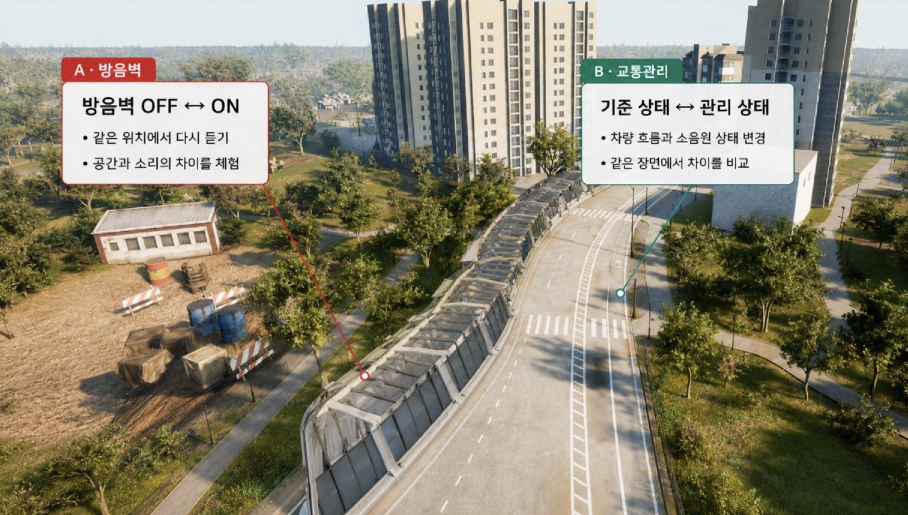
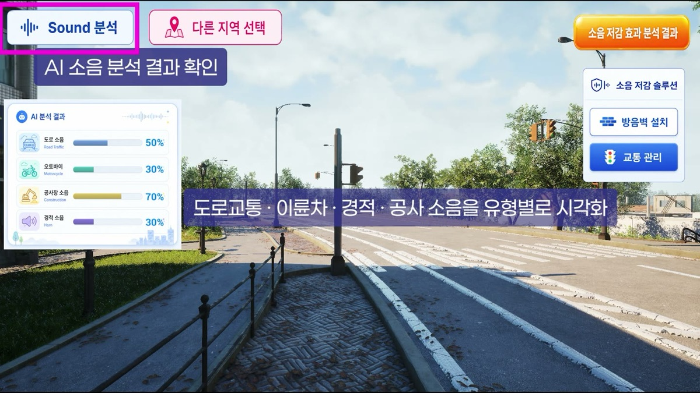
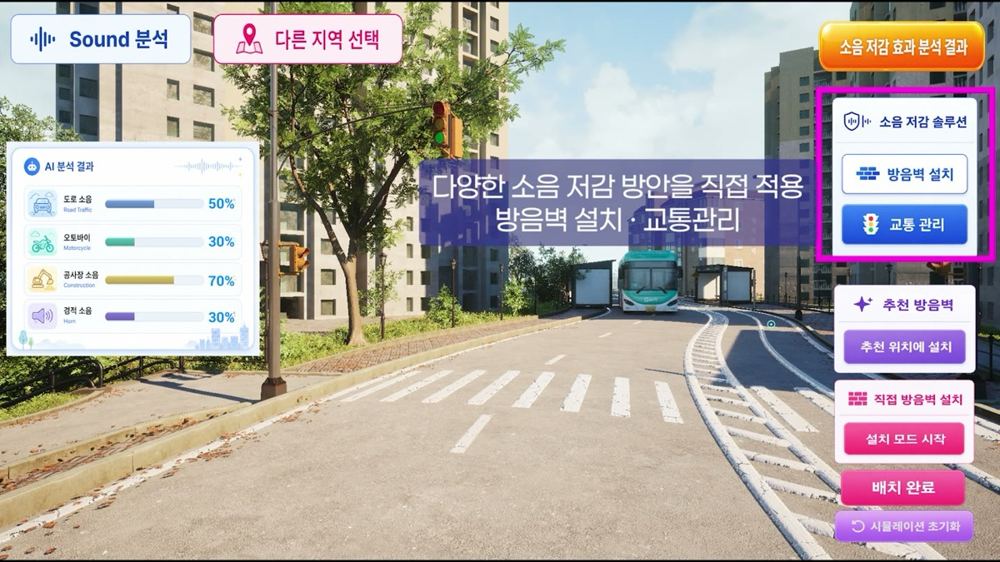
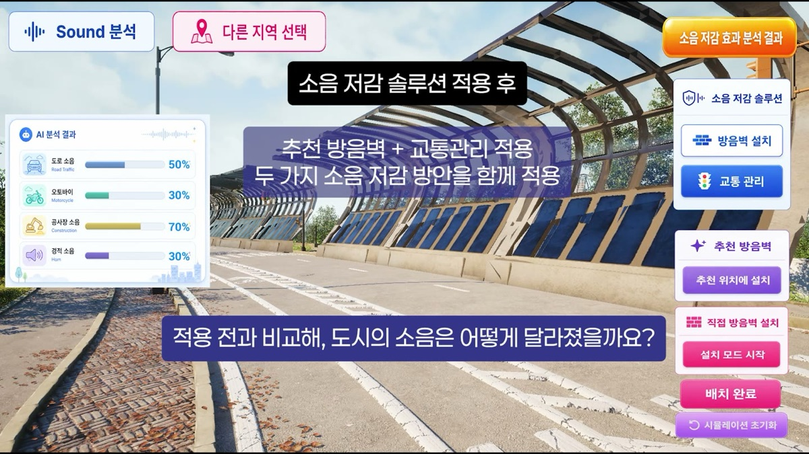
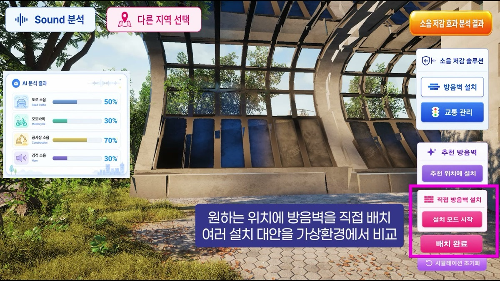

G-NOISE Excellence Award
Exploring urban noise responses in a virtual city

G-NOISE is an early digital-twin-style prototype: a reduced-scale city block in Unreal Engine that reflects real urban noise recordings. Users inspect noise sources in the streetscape, then compare preset responses — noise barriers and traffic management — before and after.
My role. I led overall system planning and trained the AI audio model, a multi-label MLP classifier on pretrained YAMNet embeddings. It turns recordings into noise events (type, onset, duration, confidence) exported as JSON, which the virtual environment reads to place and play the noise sources. Teammates built the Unreal environment and the JSON integration.
How it works
- Audio inputUrban recordings · 16 kHz mono, 10 s windows
- AI analysisYAMNet embeddings → multi-label MLP
- Data handoffNoise events as
result.json - XR interactionUnreal polls JSON, places sources, compares scenarios
Six noise classes: road traffic, construction, residential, industrial, railway and aircraft.
Competition demonstration

The Sound Analysis panel shows detected noise categories in the street.

The street before any response is applied.

A noise barrier and traffic management applied together.

Users place barriers at different positions and compare them.
Model check
| Model | Macro F1 | Accuracy | Change |
|---|---|---|---|
| v2 (previous) | 0.6086 | 0.7121 | Baseline |
| v3 (improved) | 0.6575 | 0.7563 | Hard negatives, threshold tuning |
Evaluated on 300 synthetic clips mixing two or three noise sources — synthetic mixtures, not field recordings.